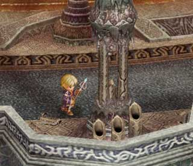

| 概要 | 情報 | 攻略チャート |
| Ys ORININ 攻略へ |
| 悪魔の回廊を移動し、外へ移動する ルーに「ロダの実」をあげる (「ハンマー」を入手) 女神像のあった場所まで戻る エポナとのイベント  回廊へ戻り、柱を「ハンマー」で壊す |
| 悪魔の回廊へ戻る 赤い魔物を倒し、壁を消す 悪魔の回廊の一番上の出入り口へ行き、宝箱から「クレリア原鉱」を入手 悪魔の回廊へ戻り、一つ下の出入り口へ 風の魔法を使いながら、ジャンプ床を利用し「精霊の衣」を入手 宝箱から「シェルグリーヴ」を入手 (上の足場から、風の魔法を発動しつつゆっくりと降りる) (次のマップへ) (回廊へ出る) |
| マップ左上(?)の宝箱の周りに突然結界ができる マップ左下(?)の出入り口へ 灯籠の火をともす (前のマップの戻る) マップ右(?)の出入り口へ 灯籠の火をともす (前のマップの戻る) 吊り橋でジャンプし、上の足場へ移動 灯籠に火を付ける 右下の吊り橋を渡り、次のマップへ 宝箱から「セルセタの秘薬」入手 (前のマップの戻る) 右上の吊り橋を渡り、灯籠に火を付ける (宝箱の周りの結界が消える) 宝箱から「怪魔のメダル」を入手 マップ左上(?)の出入り口へ 赤い魔物を倒し、邪神像を浄化 扉に「怪魔のメダル」をはめる ゲラルディー戦 イベント |
| 概要 | 情報 | 攻略チャート |
| Ys ORININ 攻略へ |